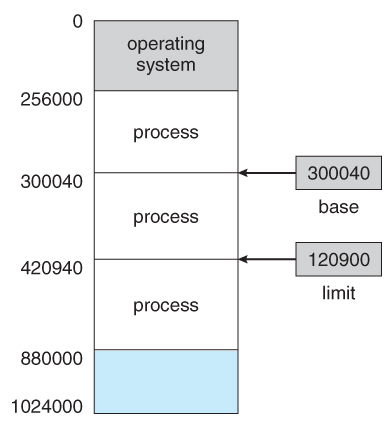
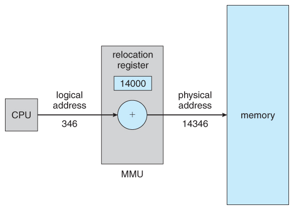
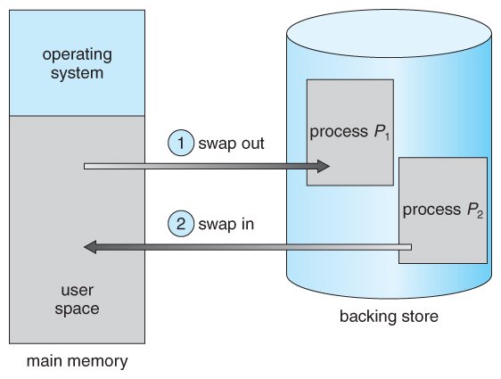
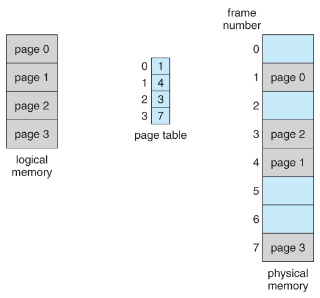
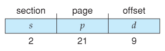

Main Memory
References:
- Abraham Silberschatz, Greg Gagne, and Peter Baer Galvin, "Operating System Concepts, Ninth Edition ", Chapter 8
8.1 Background
- Obviously memory accesses and memory management are a very
important part of modern computer operation. Every instruction has to be
fetched from memory before it can be executed, and most instructions
involve retrieving data from memory or storing data in memory or both.
- The advent of multi-tasking OSes compounds the complexity of
memory management, because because as processes are swapped in and out
of the CPU, so must their code and data be swapped in and out of memory,
all at high speeds and without interfering with any other processes.
- Shared memory, virtual memory, the classification of memory as
read-only versus read-write, and concepts like copy-on-write forking all
further complicate the issue.
8.1.1 Basic Hardware
- It should be noted that from the memory chips point of view, all
memory accesses are equivalent. The memory hardware doesn't know what a
particular part of memory is being used for, nor does it care. This is
almost true of the OS as well, although not entirely.
- The CPU can only access its registers and main memory. It
cannot, for example, make direct access to the hard drive, so any data
stored there must first be transferred into the main memory chips before
the CPU can work with it. ( Device drivers communicate with their
hardware via interrupts and "memory" accesses, sending short
instructions for example to transfer data from the hard drive to a
specified location in main memory. The disk controller monitors the bus
for such instructions, transfers the data, and then notifies the CPU
that the data is there with another interrupt, but the CPU never gets
direct access to the disk. )
- Memory accesses to registers are very fast, generally one clock
tick, and a CPU may be able to execute more than one machine instruction
per clock tick.
- Memory accesses to main memory are comparatively slow, and may
take a number of clock ticks to complete. This would require intolerable
waiting by the CPU if it were not for an intermediary fast memory cache
built into most modern CPUs. The basic idea of the cache is to transfer
chunks of memory at a time from the main memory to the cache, and then
to access individual memory locations one at a time from the cache.
- User processes must be restricted so that they only access
memory locations that "belong" to that particular process. This is
usually implemented using a base register and a limit register for each
process, as shown in Figures 8.1 and 8.2 below. Every
memory access made by a user process is checked against these two
registers, and if a memory access is attempted outside the valid range,
then a fatal error is generated. The OS obviously has access to all
existing memory locations, as this is necessary to swap users' code and
data in and out of memory. It should also be obvious that changing the
contents of the base and limit registers is a privileged activity,
allowed only to the OS kernel.

Figure 8.1 - A base and a limit register define a logical addresss space
Figure 8.2 - Hardware address protection with base and limit registers
8.1.2 Address Binding
- User programs typically refer to memory addresses with symbolic
names such as "i", "count", and "averageTemperature". These symbolic
names must be mapped or bound to physical memory addresses, which typically occurs in several stages:
- Compile Time - If it is known at compile time where a program will reside in physical memory, then absolute code
can be generated by the compiler, containing actual physical addresses.
However if the load address changes at some later time, then the
program will have to be recompiled. DOS .COM programs use compile time
binding.
- Load Time - If the location at which a program will be loaded is not known at compile time, then the compiler must generate relocatable code,
which references addresses relative to the start of the program. If
that starting address changes, then the program must be reloaded but not
recompiled.
- Execution Time - If a program can be moved
around in memory during the course of its execution, then binding must
be delayed until execution time. This requires special hardware, and is
the method implemented by most modern OSes.
- Figure 8.3 shows the various stages of the binding processes and the units involved in each stage:
Figure 8.3 - Multistep processing of a user program
8.1.3 Logical Versus Physical Address Space
- The address generated by the CPU is a logical address, whereas the address actually seen by the memory hardware is a physical address.
- Addresses bound at compile time or load time have identical logical and physical addresses.
- Addresses created at execution time, however, have different logical and physical addresses.
- In this case the logical address is also known as a virtual address, and the two terms are used interchangeably by our text.
- The set of all logical addresses used by a program composes the logical address space, and the set of all corresponding physical addresses composes the physical address space.
- The run time mapping of logical to physical addresses is handled by the memory-management unit, MMU.
- The MMU can take on many forms. One of the simplest is a modification of the base-register scheme described earlier.
- The base register is now termed a relocation register, whose value is added to every memory request at the hardware level.
- Note that user programs never see physical addresses. User
programs work entirely in logical address space, and any memory
references or manipulations are done using purely logical addresses.
Only when the address gets sent to the physical memory chips is the
physical memory address generated.

Figure 8.4 - Dynamic relocation using a relocation register
8.1.4 Dynamic Loading
- Rather than loading an entire program into memory at once,
dynamic loading loads up each routine as it is called. The advantage is
that unused routines need never be loaded, reducing total memory usage
and generating faster program startup times. The downside is the added
complexity and overhead of checking to see if a routine is loaded every
time it is called and then then loading it up if it is not already
loaded.
8.1.5 Dynamic Linking and Shared Libraries
- With static linking library modules
get fully included in executable modules, wasting both disk space and
main memory usage, because every program that included a certain routine
from the library would have to have their own copy of that routine
linked into their executable code.
- With dynamic linking, however, only a
stub is linked into the executable module, containing references to the
actual library module linked in at run time.
- This method saves disk space, because the library routines
do not need to be fully included in the executable modules, only the
stubs.
- We will also learn that if the code section of the library routines is reentrant,
( meaning it does not modify the code while it runs, making it
safe to re-enter it ), then main memory can be saved by loading
only one copy of dynamically linked routines into memory and sharing the
code amongst all processes that are concurrently using it. ( Each
process would have their own copy of the data
section of the routines, but that may be small relative to the code
segments. ) Obviously the OS must manage shared routines in
memory.
- An added benefit of dynamically linked libraries ( DLLs, also known as shared libraries or shared objects
on UNIX systems ) involves easy upgrades and updates. When a
program uses a routine from a standard library and the routine changes,
then the program must be re-built ( re-linked ) in order to
incorporate the changes. However if DLLs are used, then as long as the
stub doesn't change, the program can be updated merely by loading new
versions of the DLLs onto the system. Version information is maintained
in both the program and the DLLs, so that a program can specify a
particular version of the DLL if necessary.
- In practice, the first time a program calls a DLL routine,
the stub will recognize the fact and will replace itself with the actual
routine from the DLL library. Further calls to the same routine will
access the routine directly and not incur the overhead of the stub
access. ( Following the UML Proxy Pattern. )
- ( Additional information regarding dynamic linking is available at http://www.iecc.com/linker/linker10.html )
8.2 Swapping
- A process must be loaded into memory in order to execute.
- If there is not enough memory available to keep all running
processes in memory at the same time, then some processes who are not
currently using the CPU may have their memory swapped out to a fast
local disk called the backing store.
8.2.1 Standard Swapping
- If compile-time or load-time address binding is used, then
processes must be swapped back into the same memory location from which
they were swapped out. If execution time binding is used, then the
processes can be swapped back into any available location.
- Swapping is a very slow process compared to other operations.
For example, if a user process occupied 10 MB and the transfer rate
for the backing store were 40 MB per second, then it would take 1/4
second ( 250 milliseconds ) just to do the data transfer.
Adding in a latency lag of 8 milliseconds and ignoring head seek time
for the moment, and further recognizing that swapping involves moving
old data out as well as new data in, the overall transfer time required
for this swap is 512 milliseconds, or over half a second. For efficient
processor scheduling the CPU time slice should be significantly longer
than this lost transfer time.
- To reduce swapping transfer overhead, it is desired to transfer
as little information as possible, which requires that the system know
how much memory a process is using, as opposed to how much it might use. Programmers can help with this by freeing up dynamic memory that they are no longer using.
- It is important to swap processes out of memory only when they
are idle, or more to the point, only when there are no pending I/O
operations. ( Otherwise the pending I/O operation could write into
the wrong process's memory space. ) The solution is to either swap
only totally idle processes, or do I/O operations only into and out of
OS buffers, which are then transferred to or from process's main memory
as a second step.
- Most modern OSes no longer use swapping, because it is too slow
and there are faster alternatives available. ( e.g. Paging. )
However some UNIX systems will still invoke swapping if the system gets
extremely full, and then discontinue swapping when the load reduces
again. Windows 3.1 would use a modified version of swapping that was
somewhat controlled by the user, swapping process's out if necessary and
then only swapping them back in when the user focused on that
particular window.

Figure 8.5 - Swapping of two processes using a disk as a backing store
8.2.2 Swapping on Mobile Systems ( New Section in 9th Edition )
- Swapping is typically not supported on mobile platforms, for several reasons:
- Mobile devices typically use flash memory in place of more
spacious hard drives for persistent storage, so there is not as much
space available.
- Flash memory can only be written to a limited number of times before it becomes unreliable.
- The bandwidth to flash memory is also lower.
- Apple's IOS asks applications to voluntarily free up memory
- Read-only data, e.g. code, is simply removed, and reloaded later if needed.
- Modified data, e.g. the stack, is never removed, but . . .
- Apps that fail to free up sufficient memory can be removed by the OS
- Android follows a similar strategy.
- Prior to terminating a process, Android writes its application state to flash memory for quick restarting.
8.3 Contiguous Memory Allocation
- One approach to memory management is to load each process into a
contiguous space. The operating system is allocated space first, usually
at either low or high memory locations, and then the remaining
available memory is allocated to processes as needed. ( The OS is
usually loaded low, because that is where the interrupt vectors are
located, but on older systems part of the OS was loaded high to make
more room in low memory ( within the 640K barrier ) for user
processes. )
8.3.1 Memory Protection ( was Memory Mapping and Protection )
- The system shown in Figure 8.6 below allows protection against
user programs accessing areas that they should not, allows programs to
be relocated to different memory starting addresses as needed, and
allows the memory space devoted to the OS to grow or shrink dynamically
as needs change.
Figure 8.6 - Hardware support for relocation and limit registers
8.3.2 Memory Allocation
- One method of allocating contiguous memory is to divide all
available memory into equal sized partitions, and to assign each process
to their own partition. This restricts both the number of simultaneous
processes and the maximum size of each process, and is no longer used.
- An alternate approach is to keep a list of unused
( free ) memory blocks ( holes ), and to find a hole
of a suitable size whenever a process needs to be loaded into memory.
There are many different strategies for finding the "best" allocation of
memory to processes, including the three most commonly discussed:
- First fit - Search the list of holes until
one is found that is big enough to satisfy the request, and assign a
portion of that hole to that process. Whatever fraction of the hole not
needed by the request is left on the free list as a smaller hole.
Subsequent requests may start looking either from the beginning of the
list or from the point at which this search ended.
- Best fit - Allocate the smallest
hole that is big enough to satisfy the request. This saves large holes
for other process requests that may need them later, but the resulting
unused portions of holes may be too small to be of any use, and will
therefore be wasted. Keeping the free list sorted can speed up the
process of finding the right hole.
- Worst fit - Allocate the largest hole
available, thereby increasing the likelihood that the remaining portion
will be usable for satisfying future requests.
- Simulations show that either first or best fit are better than
worst fit in terms of both time and storage utilization. First and best
fits are about equal in terms of storage utilization, but first fit is
faster.
8.3.3. Fragmentation
- All the memory allocation strategies suffer from external fragmentation,
though first and best fits experience the problems more so than worst
fit. External fragmentation means that the available memory is broken up
into lots of little pieces, none of which is big enough to satisfy the
next memory requirement, although the sum total could.
- The amount of memory lost to fragmentation may vary with
algorithm, usage patterns, and some design decisions such as which end
of a hole to allocate and which end to save on the free list.
- Statistical analysis of first fit, for example, shows that for N
blocks of allocated memory, another 0.5 N will be lost to
fragmentation.
- Internal fragmentation also occurs,
with all memory allocation strategies. This is caused by the fact that
memory is allocated in blocks of a fixed size, whereas the actual memory
needed will rarely be that exact size. For a random distribution of
memory requests, on the average 1/2 block will be wasted per memory
request, because on the average the last allocated block will be only
half full.
- Note that the same effect happens with hard drives, and that
modern hardware gives us increasingly larger drives and memory at the
expense of ever larger block sizes, which translates to more memory lost
to internal fragmentation.
- Some systems use variable size blocks to minimize losses due to internal fragmentation.
- If the programs in memory are relocatable, ( using
execution-time address binding ), then the external fragmentation
problem can be reduced via compaction, i.e.
moving all processes down to one end of physical memory. This only
involves updating the relocation register for each process, as all
internal work is done using logical addresses.
- Another solution as we will see in upcoming sections is to allow
processes to use non-contiguous blocks of physical memory, with a
separate relocation register for each block.
8.4 Segmentation
8.4.1 Basic Method
- Most users ( programmers ) do not think of their programs as existing in one continuous linear address space.
- Rather they tend to think of their memory in multiple segments, each dedicated to a particular use, such as code, data, the stack, the heap, etc.
- Memory segmentation supports this view
by providing addresses with a segment number ( mapped to a segment
base address ) and an offset from the beginning of that segment.
- For example, a C compiler might generate 5 segments for the user
code, library code, global ( static ) variables, the stack,
and the heap, as shown in Figure 8.7:

Figure 8.7 Programmer's view of a program.
8.4.2 Segmentation Hardware
- A segment table maps segment-offset
addresses to physical addresses, and simultaneously checks for invalid
addresses, using a system similar to the page tables and relocation base
registers discussed previously. ( Note that at this point in the
discussion of segmentation, each segment is kept in contiguous memory
and may be of different sizes, but that segmentation can also be
combined with paging as we shall see shortly. )
Figure 8.8 - Segmentation hardware

Figure 8.9 - Example of segmentation
8.5 Paging
- Paging is a memory management scheme that allows processes physical
memory to be discontinuous, and which eliminates problems with
fragmentation by allocating memory in equal sized blocks known as pages.
- Paging eliminates most of the problems of the other methods
discussed previously, and is the predominant memory management technique
used today.
8.5.1 Basic Method
- The basic idea behind paging is to divide physical memory into a number of equal sized blocks called frames, and to divide a programs logical memory space into blocks of the same size called pages.
- Any page ( from any process ) can be placed into any available frame.
- The page table is used to look up what
frame a particular page is stored in at the moment. In the following
example, for instance, page 2 of the program's logical memory is
currently stored in frame 3 of physical memory:
Figure 8.10 - Paging hardware

Figure 8.11 - Paging model of logical and physical memory
- A logical address consists of two parts: A page number in which
the address resides, and an offset from the beginning of that page.
( The number of bits in the page number limits how many pages a
single process can address. The number of bits in the offset determines
the maximum size of each page, and should correspond to the system frame
size. )
- The page table maps the page number to a frame number, to yield a
physical address which also has two parts: The frame number and the
offset within that frame. The number of bits in the frame number
determines how many frames the system can address, and the number of
bits in the offset determines the size of each frame.
- Page numbers, frame numbers, and frame sizes are determined by the
architecture, but are typically powers of two, allowing addresses to be
split at a certain number of bits. For example, if the logical address
size is 2^m and the page size is 2^n, then the high-order m-n bits of a
logical address designate the page number and the remaining n bits
represent the offset.
- Note also that the number of bits in the page number and the
number of bits in the frame number do not have to be identical. The
former determines the address range of the logical address space, and
the latter relates to the physical address space.
- ( DOS used to use an addressing scheme with 16 bit frame
numbers and 16-bit offsets, on hardware that only supported 24-bit
hardware addresses. The result was a resolution of starting frame
addresses finer than the size of a single frame, and multiple
frame-offset combinations that mapped to the same physical hardware
address. )
- Consider the following micro example, in which a process has 16
bytes of logical memory, mapped in 4 byte pages into 32 bytes of
physical memory. ( Presumably some other processes would be
consuming the remaining 16 bytes of physical memory. )
Figure 8.12 - Paging example for a 32-byte memory with 4-byte pages
- Note that paging is like having a table of relocation registers, one for each page of the logical memory.
- There is no external fragmentation with paging. All blocks of
physical memory are used, and there are no gaps in between and no
problems with finding the right sized hole for a particular chunk of
memory.
- There is, however, internal fragmentation. Memory is allocated in
chunks the size of a page, and on the average, the last page will only
be half full, wasting on the average half a page of memory per process.
( Possibly more, if processes keep their code and data in separate
pages. )
- Larger page sizes waste more memory, but are more efficient in
terms of overhead. Modern trends have been to increase page sizes, and
some systems even have multiple size pages to try and make the best of
both worlds.
- Page table entries ( frame numbers ) are typically 32
bit numbers, allowing access to 2^32 physical page frames. If those
frames are 4 KB in size each, that translates to 16 TB of addressable
physical memory. ( 32 + 12 = 44 bits of physical address space. )
- When a process requests memory ( e.g. when its code is loaded
in from disk ), free frames are allocated from a free-frame list,
and inserted into that process's page table.
- Processes are blocked from accessing anyone else's memory because
all of their memory requests are mapped through their page table. There
is no way for them to generate an address that maps into any other
process's memory space.
- The operating system must keep track of each individual process's
page table, updating it whenever the process's pages get moved in and
out of memory, and applying the correct page table when processing
system calls for a particular process. This all increases the overhead
involved when swapping processes in and out of the CPU. ( The
currently active page table must be updated to reflect the process that
is currently running. )
Figure 8.13 - Free frames (a) before allocation and (b) after allocation
8.5.2 Hardware Support
- Page lookups must be done for every memory reference, and
whenever a process gets swapped in or out of the CPU, its page table
must be swapped in and out too, along with the instruction registers,
etc. It is therefore appropriate to provide hardware support for this
operation, in order to make it as fast as possible and to make process
switches as fast as possible also.
- One option is to use a set of registers for the page table. For
example, the DEC PDP-11 uses 16-bit addressing and 8 KB pages, resulting
in only 8 pages per process. ( It takes 13 bits to address 8 KB of
offset, leaving only 3 bits to define a page number. )
- An alternate option is to store the page table in main memory, and to use a single register ( called the page-table base register, PTBR ) to record where in memory the page table is located.
- Process switching is fast, because only the single register needs to be changed.
- However memory access just got half as fast, because every memory access now requires two memory accesses - One to fetch the frame number from memory and then another one to access the desired memory location.
- The solution to this problem is to use a very special high-speed memory device called the translation look-aside buffer, TLB.
- The benefit of the TLB is that it can search an entire
table for a key value in parallel, and if it is found anywhere in the
table, then the corresponding lookup value is returned.
Figure 8.14 - Paging hardware with TLB
- The TLB is very expensive, however, and therefore very
small. ( Not large enough to hold the entire page table. ) It
is therefore used as a cache device.
- Addresses are first checked against the TLB, and if
the info is not there ( a TLB miss ), then the frame is looked
up from main memory and the TLB is updated.
- If the TLB is full, then replacement strategies range from least-recently used, LRU to random.
- Some TLBs allow some entries to be wired down, which means that they cannot be removed from the TLB. Typically these would be kernel frames.
- Some TLBs store address-space identifiers, ASIDs,
to keep track of which process "owns" a particular entry in the TLB.
This allows entries from multiple processes to be stored simultaneously
in the TLB without granting one process access to some other process's
memory location. Without this feature the TLB has to be flushed clean
with every process switch.
- The percentage of time that the desired information is found in the TLB is termed the hit ratio.
- ( Eighth Edition Version: ) For
example, suppose that it takes 100 nanoseconds to access main memory,
and only 20 nanoseconds to search the TLB. So a TLB hit takes 120
nanoseconds total ( 20 to find the frame number and then another
100 to go get the data ), and a TLB miss takes 220 ( 20 to
search the TLB, 100 to go get the frame number, and then another 100 to
go get the data. ) So with an 80% TLB hit ratio, the average memory
access time would be:
0.80 * 120 + 0.20 * 220 = 140 nanoseconds
for a 40% slowdown to get the frame number. A
98% hit rate would yield 122 nanoseconds average access time ( you
should verify this ), for a 22% slowdown.
- ( Ninth Edition Version: ) The ninth edition ignores the 20 nanoseconds required to search the TLB, yielding
0.80 * 100 + 0.20 * 200 = 120 nanoseconds
for a 20% slowdown to get the frame number. A
99% hit rate would yield 101 nanoseconds average access time ( you
should verify this ), for a 1% slowdown.
8.5.3 Protection
- The page table can also help to protect processes from accessing
memory that they shouldn't, or their own memory in ways that they
shouldn't.
- A bit or bits can be added to the page table to classify a page
as read-write, read-only, read-write-execute, or some combination of
these sorts of things. Then each memory reference can be checked to
ensure it is accessing the memory in the appropriate mode.
- Valid / invalid bits can be added to "mask off" entries in the
page table that are not in use by the current process, as shown by
example in Figure 8.12 below.
- Note that the valid / invalid bits described above cannot block
all illegal memory accesses, due to the internal fragmentation. ( Areas
of memory in the last page that are not entirely filled by the process,
and may contain data left over by whoever used that frame last. )
- Many processes do not use all of the page table available to
them, particularly in modern systems with very large potential page
tables. Rather than waste memory by creating a full-size page table for
every process, some systems use a page-table length register, PTLR, to specify the length of the page table.

Figure 8.15 - Valid (v) or invalid (i) bit in page table
8.5.4 Shared Pages
- Paging systems can make it very easy to share blocks of memory,
by simply duplicating page numbers in multiple page frames. This may be
done with either code or data.
- If code is reentrant, that means that
it does not write to or change the code in any way ( it is non
self-modifying ), and it is therefore safe to re-enter it. More
importantly, it means the code can be shared by multiple processes, so
long as each has their own copy of the data and registers, including the
instruction register.
- In the example given below, three different users are running
the editor simultaneously, but the code is only loaded into memory
( in the page frames ) one time.
- Some systems also implement shared memory in this fashion.

Figure 8.16 - Sharing of code in a paging environment
8.6 Structure of the Page Table
8.6.1 Hierarchical Paging
- Most modern computer systems support logical address spaces of 2^32 to 2^64.
- With a 2^32 address space and 4K ( 2^12 ) page sizes,
this leave 2^20 entries in the page table. At 4 bytes per entry, this
amounts to a 4 MB page table, which is too large to reasonably keep in
contiguous memory. ( And to swap in and out of memory with each
process switch. ) Note that with 4K pages, this would take 1024
pages just to hold the page table!
- One option is to use a two-tier paging system, i.e. to page the page table.
- For example, the 20 bits described above could be broken down
into two 10-bit page numbers. The first identifies an entry in the outer
page table, which identifies where in memory to find one page of an
inner page table. The second 10 bits finds a specific entry in that
inner page table, which in turn identifies a particular frame in
physical memory. ( The remaining 12 bits of the 32 bit logical
address are the offset within the 4K frame. )
Figure 8.17 A two-level page-table scheme
Figure 8.18 - Address translation for a two-level 32-bit paging architecture
- VAX Architecture divides 32-bit addresses into 4 equal sized sections, and each page is 512 bytes, yielding an address form of:

- With a 64-bit logical address space and 4K pages, there are 52
bits worth of page numbers, which is still too many even for two-level
paging. One could increase the paging level, but with 10-bit page tables
it would take 7 levels of indirection, which would be prohibitively
slow memory access. So some other approach must be used.
64-bits Two-tiered leaves 42 bits in outer table
Going to a fourth level still leaves 32 bits in the outer table.
8.6.2 Hashed Page Tables
- One common data structure for accessing data that is sparsely distributed over a broad range of possible values is with hash tables. Figure 8.16 below illustrates a hashed page table using chain-and-bucket hashing:
Figure 8.19 - Hashed page table
8.6.3 Inverted Page Tables
- Another approach is to use an inverted page table.
Instead of a table listing all of the pages for a particular process,
an inverted page table lists all of the pages currently loaded in
memory, for all processes. ( I.e. there is one entry per frame instead of one entry per page. )
- Access to an inverted page table can be slow, as it may be
necessary to search the entire table in order to find the desired page
( or to discover that it is not there. ) Hashing the table can
help speedup the search process.
- Inverted page tables prohibit the normal method of implementing
shared memory, which is to map multiple logical pages to a common
physical frame. ( Because each frame is now mapped to one and only
one process. )

Figure 8.20 - Inverted page table
8.6.4 Oracle SPARC Solaris ( Optional, New Section in 9th Edition )
8.7 Example: Intel 32 and 64-bit Architectures ( Optional )
8.7.1.1 IA-32 Segmentation
- The Pentium CPU provides both pure segmentation and
segmentation with paging. In the latter case, the CPU generates a
logical address ( segment-offset pair ), which the
segmentation unit converts into a logical linear address, which in turn
is mapped to a physical frame by the paging unit, as shown in Figure
8.21:
Figure 8.21 - Logical to physical address translation in IA-32
8.7.1.1 IA-32 Segmentation
- The Pentium architecture allows segments to be as large as 4 GB, ( 24 bits of offset ).
- Processes can have as many as 16K segments, divided into two 8K groups:
- 8K private to that particular process, stored in the Local Descriptor Table, LDT.
- 8K shared among all processes, stored in the Global Descriptor Table, GDT.
- Logical addresses are ( selector, offset ) pairs, where the selector is made up of 16 bits:
- A 13 bit segment number ( up to 8K )
- A 1 bit flag for LDT vs. GDT.
- 2 bits for protection codes.
- The descriptor tables contain 8-byte descriptions of each segment, including base and limit registers.
- Logical linear addresses are generated by looking the selector
up in the descriptor table and adding the appropriate base address to
the offset, as shown in Figure 8.22:
Figure 8.22 - IA-32 segmentation
8.7.1.2 IA-32 Paging
- Pentium paging normally uses a two-tier paging scheme, with the
first 10 bits being a page number for an outer page table ( a.k.a.
page directory ), and the next 10 bits being a page number within
one of the 1024 inner page tables, leaving the remaining 12 bits as an
offset into a 4K page.
- A special bit in the page directory can indicate that this
page is a 4MB page, in which case the remaining 22 bits are all used as
offset and the inner tier of page tables is not used.
- The CR3 register points to the page directory for the current process, as shown in Figure 8.23 below.
- If the inner page table is currently swapped out to disk, then
the page directory will have an "invalid bit" set, and the remaining 31
bits provide information on where to find the swapped out page table on
the disk.
Figure 8.23 - Paging in the IA-32 architecture.
Figure 8.24 - Page address extensions.
8.7.2 x86-64
Figure 8.25 - x86-64 linear address.
8.8 Example: ARM Architecture ( Optional )
Figure 8.26 - Logical address translation in ARM.
Old 8.7.3 Linux on Pentium Systems - Omitted from the Ninth Edition
- Because Linux is designed for a wide variety of platforms, some
of which offer only limited support for segmentation, Linux supports
minimal segmentation. Specifically Linux uses only 6 segments:
- Kernel code.
- Kerned data.
- User code.
- User data.
- A task-state segment, TSS
- A default LDT segment
- All processes share the same user code and data segments,
because all process share the same logical address space and all segment
descriptors are stored in the Global Descriptor Table. ( The LDT
is generally not used. )
- Each process has its own TSS, whose descriptor is stored in the
GDT. The TSS stores the hardware state of a process during context
switches.
- The default LDT is shared by all processes and generally not
used, but if a process needs to create its own LDT, it may do so, and
use that instead of the default.
- The Pentium architecture provides 2 bits ( 4 values ) for
protection in a segment selector, but Linux only uses two values: user
mode and kernel mode.
- Because Linux is designed to run on 64-bit as well as 32-bit
architectures, it employs a three-level paging strategy as shown in
Figure 8.24, where the number of bits in each portion of the address
varies by architecture. In the case of the Pentium architecture, the
size of the middle directory portion is set to 0 bits, effectively
bypassing the middle directory.
8.8 Summary